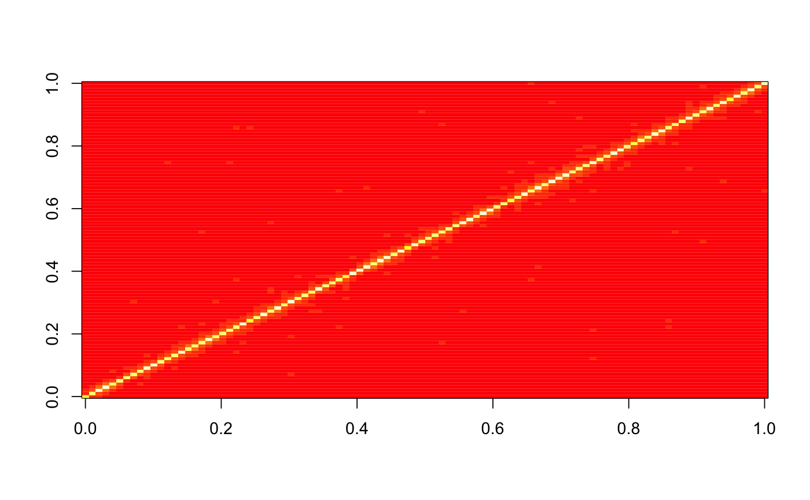
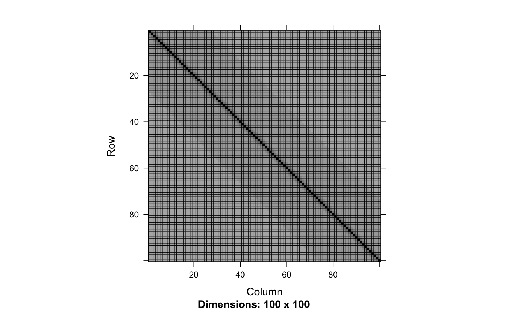
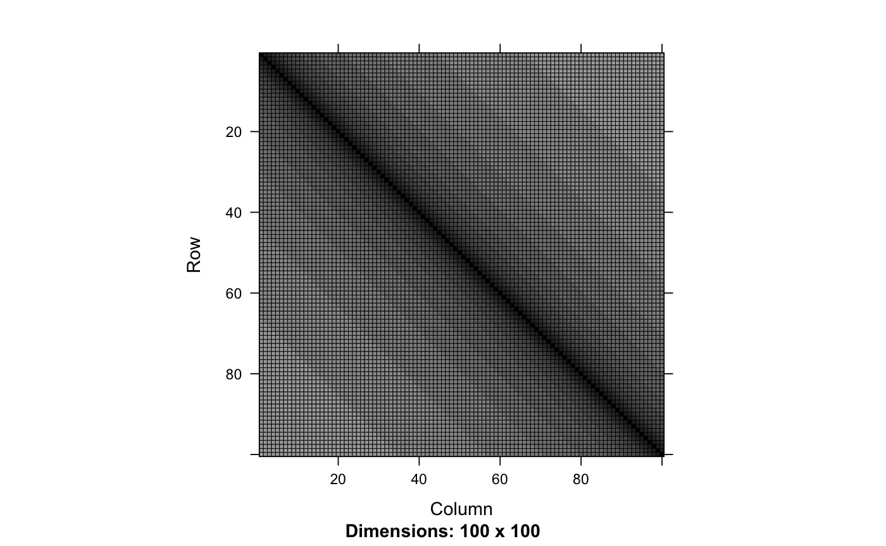
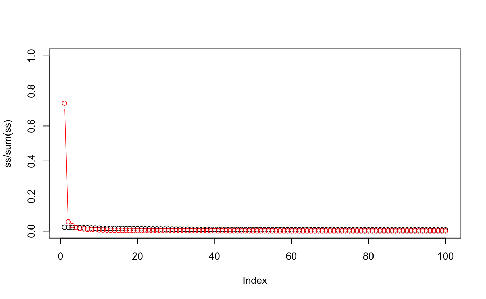

simulateGaussianNullsFromSigma
Simulate m observations of a p-dimensional Gaussian vector with given covariance matrix
simulateGaussianNullsFromSigma(Sigma, n = 1)
Arguments
| Sigma | Population covariance matrix (of size |
|---|---|
| n | Number of replications of the simulation |
Value
A m x n Matrix simulated test statistics, where
m is the dimension of Sigma
Examples
library("Matrix") m <- 100 n <- 1000 ## Toeplitz, short range tcoefs <- toeplitz((1:m)^(-2)) Sigma <- Matrix(tcoefs, sparse = TRUE) Y <- simulateGaussianNullsFromSigma(Sigma, n) str(Y)#> num [1:100, 1:1000] 0.198 0.367 0.621 -0.695 -1.422 ...SigmaHat <- Y %*% t(Y)/n image(SigmaHat)image(Sigma)svd(SigmaHat)$d#> [1] 2.6197906 2.4807008 2.4212676 2.2194276 2.1675996 2.1218324 2.0617269 #> [8] 1.9334601 1.8581555 1.8401665 1.8101895 1.7218575 1.6436610 1.6069261 #> [15] 1.5645576 1.5415229 1.4847527 1.4778749 1.4552866 1.4143010 1.3860356 #> [22] 1.3446108 1.3025333 1.2682125 1.2446937 1.2136287 1.2053667 1.1910516 #> [29] 1.1550009 1.1478922 1.1345771 1.1016002 1.0877081 1.0727416 1.0599054 #> [36] 1.0494096 1.0445324 1.0036010 0.9986258 0.9771920 0.9596176 0.9500868 #> [43] 0.9365378 0.9301238 0.9231806 0.9159956 0.8980133 0.8839464 0.8728596 #> [50] 0.8564019 0.8440781 0.8284210 0.8257963 0.8113899 0.8092004 0.7882490 #> [57] 0.7772095 0.7655445 0.7593793 0.7371664 0.7347511 0.7273153 0.7132137 #> [64] 0.7057275 0.6935595 0.6874909 0.6752045 0.6671942 0.6537013 0.6470203 #> [71] 0.6292407 0.6222530 0.6180588 0.6136587 0.6039130 0.5975651 0.5917036 #> [78] 0.5834295 0.5721181 0.5504481 0.5464368 0.5350361 0.5330931 0.5246890 #> [85] 0.5121389 0.5075343 0.5029564 0.4966942 0.4914000 0.4811240 0.4730667 #> [92] 0.4515290 0.4414715 0.4381797 0.4266781 0.4150497 0.4026619 0.3935158 #> [99] 0.3812849 0.3718655(ss <- svd(Sigma)$d)#> [1] 2.2247332 2.1419795 2.0682744 1.9997120 1.9364782 1.8773238 1.8221125 #> [8] 1.7701725 1.7213510 1.6752189 1.6316419 1.5903205 1.5511417 1.5138840 #> [15] 1.4784532 1.4446790 1.4124825 1.3817292 1.3523523 1.3242433 1.2973455 #> [22] 1.2715697 1.2468673 1.2231642 1.2004182 1.1785671 1.1575743 1.1373869 #> [29] 1.1179728 1.0992866 1.0813005 1.0639751 1.0472858 1.0311984 1.0156912 #> [36] 1.0007344 0.9863085 0.9723874 0.9589538 0.9459847 0.9334645 0.9213728 #> [43] 0.9096958 0.8984154 0.8875189 0.8769904 0.8668184 0.8569886 0.8474909 #> [50] 0.8383122 0.8294433 0.8208727 0.8125920 0.8045908 0.7968614 0.7893945 #> [57] 0.7821833 0.7752191 0.7684958 0.7620057 0.7557430 0.7497010 0.7438743 #> [64] 0.7382568 0.7328436 0.7276292 0.7226092 0.7177786 0.7131333 0.7086689 #> [71] 0.7043818 0.7002677 0.6963235 0.6925454 0.6889304 0.6854754 0.6821775 #> [78] 0.6790338 0.6760419 0.6731991 0.6705033 0.6679521 0.6655437 0.6632759 #> [85] 0.6611471 0.6591554 0.6572995 0.6555776 0.6539887 0.6525313 0.6512043 #> [92] 0.6500068 0.6489379 0.6479965 0.6471822 0.6464942 0.6459320 0.6454951 #> [99] 0.6451834 0.6449964max(ss)/min(ss)#> [1] 3.449218## Toeplitz, long range tcoefs <- toeplitz((1:m)^(-.1)) Sigma <- Matrix(tcoefs, sparse = TRUE) Y <- simulateGaussianNullsFromSigma(Sigma, n) str(Y)#> num [1:100, 1:1000] -0.919 0.103 -0.423 -1.326 -1.301 ...SigmaHat <- Y %*% t(Y)/n image(SigmaHat)image(Sigma)svd(SigmaHat)$d#> [1] 67.22445079 5.13421511 3.25011157 2.12162311 1.46787012 1.14353324 #> [7] 1.04742158 0.86519920 0.75855554 0.64833646 0.57813680 0.52915837 #> [13] 0.44635810 0.38654336 0.37170878 0.35110397 0.31636212 0.29338497 #> [19] 0.29074120 0.24878533 0.24667732 0.23050824 0.21294131 0.20191735 #> [25] 0.19066018 0.18185372 0.18051270 0.16416630 0.15531799 0.15057656 #> [31] 0.14352458 0.13499399 0.12907134 0.12297808 0.12241979 0.12130050 #> [37] 0.11471013 0.11138923 0.10644796 0.10423894 0.10010030 0.09816994 #> [43] 0.09515782 0.09354845 0.09019536 0.08752021 0.08658901 0.08405076 #> [49] 0.08238272 0.07914319 0.07673415 0.07501247 0.07368669 0.07217140 #> [55] 0.06962832 0.06780303 0.06634355 0.06348256 0.06244188 0.06224617 #> [61] 0.06139184 0.06060327 0.05930280 0.05919087 0.05800113 0.05736527 #> [67] 0.05644890 0.05470672 0.05257827 0.05186971 0.05115706 0.05017867 #> [73] 0.04882489 0.04838837 0.04764177 0.04673364 0.04625827 0.04580888 #> [79] 0.04496970 0.04491004 0.04394234 0.04279550 0.04262589 0.04198509 #> [85] 0.04037142 0.03960494 0.03859142 0.03815359 0.03778248 0.03652407 #> [91] 0.03607589 0.03538331 0.03452328 0.03374620 0.03325860 0.03254920 #> [97] 0.03194074 0.03136286 0.02948415 0.02899205(sl <- svd(Sigma)$d)#> [1] 73.01012603 5.28991559 3.07620224 2.05419269 1.55947264 1.22743712 #> [7] 1.01499679 0.85339459 0.73682547 0.64234909 0.56944002 0.50803438 #> [13] 0.45853935 0.41576260 0.38021685 0.34891962 0.32231974 0.29856830 #> [19] 0.27802747 0.25948400 0.24322370 0.22841462 0.21528164 0.20323396 #> [25] 0.19244927 0.18249590 0.17351522 0.16518433 0.15761657 0.15056559 #> [31] 0.14412296 0.13809754 0.13256386 0.12737147 0.12258145 0.11807391 #> [37] 0.11389919 0.10996072 0.10630022 0.10283918 0.09961235 0.09655535 #> [43] 0.09369726 0.09098492 0.08844273 0.08602653 0.08375685 0.08159682 #> [49] 0.07956375 0.07762668 0.07580027 0.07405842 0.07241354 0.07084355 #> [55] 0.06935896 0.06794107 0.06659876 0.06531614 0.06410074 0.06293901 #> [61] 0.06183732 0.06078414 0.05978482 0.05882955 0.05792281 0.05705624 #> [67] 0.05623360 0.05544775 0.05470183 0.05398977 0.05331416 0.05266986 #> [73] 0.05205897 0.05147715 0.05092611 0.05040219 0.04990675 0.04943672 #> [79] 0.04899317 0.04857354 0.04817866 0.04780641 0.04745739 0.04712990 #> [85] 0.04682435 0.04653935 0.04627519 0.04603077 0.04580625 0.04560078 #> [91] 0.04541444 0.04524658 0.04509721 0.04496587 0.04485253 0.04475688 #> [97] 0.04467886 0.04461828 0.04457508 0.04454919max(sl)/min(sl)#> [1] 1638.865plot(ss/sum(ss), col=1, t='b', ylim=c(0,1))lines(sl/sum(sl), col=2, t='b')